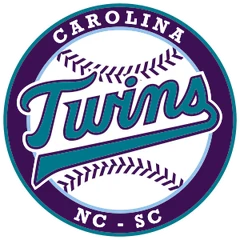

Low Minors · RP
Hugo Castellanos
- Team
 Carolina Twins
Carolina Twins- Organization
- Atlanta Braves
- Position
- RP
- Bats/Throws
- R/R
- Height/Weight
- 6'1", 205 lb
- Born
- Jun 30, 1980 in Los Mochis, MEX
- Age
- 21
- Uniform
- #49
2002 Pitching
| Team | Lg | G | GS | W | L | SV | IP | H | R | ER | BB | K | HR | ERA | WHIP | HLD | BS | QS | CG | SHO |
|---|---|---|---|---|---|---|---|---|---|---|---|---|---|---|---|---|---|---|---|---|
| CaTw | Low Minors | 11 | 0 | 2 | 1 | 0 | 18.1 | 15 | 4 | 2 | 3 | 14 | 2 | 0.98 | 0.98 | 1 | 1 | 0 | 0 | 0 |
2002 Pitching, Advanced
| Team | Lg | BF | Pit | Pit/IP | Opp AVG | BABIP | HBP | WP | IR | IR scored | K/9 | BB/9 | HR/9 | K% | BB% | K-BB% | FIP | ERA+ | GB% | WPA | WAR |
|---|---|---|---|---|---|---|---|---|---|---|---|---|---|---|---|---|---|---|---|---|---|
| CaTw | Low Minors | 71 | 215 | 11.7 | .221 | .250 | 0 | 0 | 12 | 2 (16.7%) | 6.9 | 1.5 | 1.0 | 19.7% | 4.2% | 15.5% | 3.86 | 438 | 55.3% | 0.33 | 0.2 |
Pitch Arsenal OOTP scouting ratings, 20–80
Pitches
Stuff, Movement, and Control
Stamina, Ground/Fly, and Hold
2002 Results Low Minors
These pitch grades are OOTP scouting ratings on the 20–80 scale (50 is average; a tick on a bar is potential, when it is higher than the current grade). The export has no per-pitch usage or results, so none are shown. K%, BB% and GB/FB come from his game logs (GB and FB are official result counts, not launch angle). Ground/fly is the export’s tendency rating, not a ground-ball percentage. Velocity and arm slot are omitted because their integer codes have no verified labels.
Batted Ball Allowed 2002 Low Minors, 52 batted balls
No percentile: not qualified in Low Minors yet (1 IP per team game). Balls in play only, from OOTP’s launch-angle reading.
Pitching Splits
| Split | G | GS | W | L | SV | IP | H | R | ER | BB | K | HR | ERA | WHIP | Opp AVG | K/9 | BB/9 | HR/9 | FIP |
|---|---|---|---|---|---|---|---|---|---|---|---|---|---|---|---|---|---|---|---|
| Home | 3 | 0 | 1 | 0 | 0 | 5.1 | 2 | 0 | 0 | 1 | 6 | 0 | 0.00 | 0.56 | .111 | 10.1 | 1.7 | 0.0 | 1.79 |
| Road | 8 | 0 | 1 | 1 | 0 | 13.0 | 13 | 4 | 2 | 2 | 8 | 2 | 1.38 | 1.15 | .260 | 5.5 | 1.4 | 1.4 | 4.71 |
By Month
| Month | G | GS | W | L | SV | IP | H | R | ER | BB | K | HR | ERA | WHIP | Opp AVG | K/9 | BB/9 | HR/9 | FIP |
|---|---|---|---|---|---|---|---|---|---|---|---|---|---|---|---|---|---|---|---|
| April | 9 | 0 | 1 | 0 | 0 | 13.1 | 10 | 3 | 1 | 2 | 13 | 2 | 0.68 | 0.90 | .204 | 8.8 | 1.4 | 1.4 | 3.93 |
| May | 2 | 0 | 1 | 1 | 0 | 5.0 | 5 | 1 | 1 | 1 | 1 | 0 | 1.80 | 1.20 | .263 | 1.8 | 1.8 | 0.0 | 3.68 |
vs Left- and Right-Handed Batters
| Split | BF | AB | H | HR | BB | K | Opp AVG | Opp OBP | Opp SLG | K% | BB% |
|---|---|---|---|---|---|---|---|---|---|---|---|
| vs LHB | 34 | 33 | 7 | 2 | 1 | 6 | .212 | .235 | .424 | 17.6% | 2.9% |
| vs RHB | 37 | 35 | 8 | 0 | 2 | 8 | .229 | .270 | .257 | 21.6% | 5.4% |
Opponents by Situation
| Situation | PA | AB | H | 2B | 3B | HR | RBI | BB | K | AVG | OBP | SLG | OPS |
|---|---|---|---|---|---|---|---|---|---|---|---|---|---|
| Bases empty | 37 | 36 | 8 | 1 | 0 | 1 | 1 | 1 | 8 | .222 | .243 | .333 | .577 |
| Runners on | 32 | 30 | 7 | 1 | 0 | 1 | 5 | 2 | 6 | .233 | .281 | .367 | .648 |
| Runners in scoring position | 23 | 21 | 5 | 1 | 0 | 1 | 5 | 2 | 5 | .238 | .304 | .429 | .733 |
| RISP, two outs | 12 | 11 | 2 | 1 | 0 | 1 | 3 | 1 | 2 | .182 | .250 | .545 | .795 |
| Innings 4-6 | 22 | 20 | 3 | 0 | 0 | 0 | 1 | 2 | 7 | .150 | .227 | .150 | .377 |
| Innings 7-9 | 47 | 46 | 12 | 2 | 0 | 2 | 5 | 1 | 7 | .261 | .277 | .435 | .711 |
| Close & late | 26 | 25 | 6 | 2 | 0 | 1 | 3 | 1 | 4 | .240 | .269 | .440 | .709 |
| Pinch-hitting PA | 6 | 6 | 3 | 0 | 0 | 0 | 2 | 0 | 2 | .500 | .500 | .500 | 1.000 |
Opponents by Count count on the final pitch
| Count | PA | AB | H | 2B | 3B | HR | RBI | BB | K | AVG | OBP | SLG | OPS |
|---|---|---|---|---|---|---|---|---|---|---|---|---|---|
| First pitch (0-0) | 15 | 14 | 3 | 0 | 0 | 0 | 2 | 1 | 0 | .214 | .267 | .214 | .481 |
| Batter ahead | 22 | 20 | 6 | 0 | 0 | 1 | 1 | 2 | 0 | .300 | .364 | .450 | .814 |
| Even count | 12 | 12 | 4 | 1 | 0 | 1 | 3 | 0 | 2 | .333 | .333 | .667 | 1.000 |
| Batter behind | 20 | 20 | 2 | 1 | 0 | 0 | 0 | 0 | 12 | .100 | .100 | .150 | .250 |
| Two strikes | 27 | 27 | 5 | 1 | 0 | 0 | 0 | 0 | 14 | .185 | .185 | .222 | .407 |
| Full count (3-2) | 2 | 2 | 1 | 0 | 0 | 0 | 0 | 0 | 0 | .500 | .500 | .500 | 1.000 |
Every count
| Count | PA | AB | H | 2B | 3B | HR | RBI | BB | K | AVG | OBP | SLG | OPS |
|---|---|---|---|---|---|---|---|---|---|---|---|---|---|
| 0-0 | 15 | 14 | 3 | 0 | 0 | 0 | 2 | 1 | 0 | .214 | .267 | .214 | .481 |
| 0-1 | 2 | 2 | 0 | 0 | 0 | 0 | 0 | 0 | 0 | .000 | .000 | .000 | .000 |
| 0-2 | 7 | 7 | 0 | 0 | 0 | 0 | 0 | 0 | 5 | .000 | .000 | .000 | .000 |
| 1-0 | 10 | 10 | 1 | 0 | 0 | 0 | 0 | 0 | 0 | .100 | .100 | .100 | .200 |
| 1-1 | 5 | 5 | 2 | 1 | 0 | 1 | 3 | 0 | 0 | .400 | .400 | 1.200 | 1.600 |
| 1-2 | 11 | 11 | 2 | 1 | 0 | 0 | 0 | 0 | 7 | .182 | .182 | .273 | .455 |
| 2-0 | 3 | 3 | 1 | 0 | 0 | 0 | 0 | 0 | 0 | .333 | .333 | .333 | .667 |
| 2-1 | 4 | 4 | 3 | 0 | 0 | 1 | 1 | 0 | 0 | .750 | .750 | 1.500 | 2.250 |
| 2-2 | 7 | 7 | 2 | 0 | 0 | 0 | 0 | 0 | 2 | .286 | .286 | .286 | .571 |
| 3-0 | 1 | 0 | 0 | 0 | 0 | 0 | 0 | 1 | 0 | - | 1.000 | - | - |
| 3-1 | 2 | 1 | 0 | 0 | 0 | 0 | 0 | 1 | 0 | .000 | .500 | .000 | .500 |
| 3-2 | 2 | 2 | 1 | 0 | 0 | 0 | 0 | 0 | 0 | .500 | .500 | .500 | 1.000 |
Situational splits are rebuilt from every plate appearance in the export (base/out state when the PA began). "RBI" counts runs batted in on that PA. Close & late = 7th inning or later with the score within 3 runs (OOTP’s Close flag marks every PA with the margin at 3 or fewer). Pinch-hitting PA = plate appearances as a pinch hitter (for pitchers: against pinch hitters). Counts are the count when the PA’s final pitch was thrown, as OOTP records it: "Two strikes" means the PA ended on a two-strike pitch, "0-0" is the first-pitch result; batter ahead = more balls than strikes.
2002 ERA by Game
2002 Spray Chart
2002 Hot and Cold WPA, game by game
2002 Pitching Game Log
| Date | Opp | Score | Dec | IP | H | R | ER | BB | K | HR | BF | PC | GB | FB | QS | WPA | |
|---|---|---|---|---|---|---|---|---|---|---|---|---|---|---|---|---|---|
| May 10 | vsBAYA | W 2-1 | W | 2.1 | 1 | 0 | 0 | 0 | 1 | 0 | 8 | 18 | 4 | 2 | 0.164 | ||
| May 5 | @NoDes | L 3-4 | L,BS | 2.2 | 4 | 1 | 1 | 1 | 0 | 0 | 12 | 28 | 3 | 4 | -0.226 | ||
| Apr 30 | @GAST | W 8-7 | W | 1.0 | 0 | 0 | 0 | 0 | 2 | 0 | 3 | 11 | 0 | 1 | 0.006 | ||
| Apr 28 | @GAST | W 7-5 | H | 2.0 | 2 | 2 | 0 | 0 | 1 | 1 | 9 | 28 | 2 | 3 | 0.005 | ||
| Apr 23 | @ROCH | L 1-6 | 3.0 | 2 | 0 | 0 | 1 | 3 | 0 | 11 | 40 | 2 | 3 | 0.009 | |||
| Apr 21 | @ROCH | L 8-9 | 2.0 | 3 | 1 | 1 | 0 | 1 | 1 | 8 | 26 | 2 | 2 | 0.023 | |||
| Apr 17 | @ARCH | L 0-1 | 1.2 | 1 | 0 | 0 | 0 | 1 | 0 | 6 | 22 | 4 | 0 | 0.172 | |||
| Apr 16 | @ARCH | L 1-7 | 0.1 | 0 | 0 | 0 | 0 | 0 | 0 | 1 | 2 | 1 | 0 | 0.001 | |||
| Apr 12 | vsJaMag | W 10-2 | 1.0 | 1 | 0 | 0 | 0 | 0 | 0 | 4 | 11 | 2 | 1 | 0.001 | |||
| Apr 10 | @RedSt | L 3-9 | 0.1 | 1 | 0 | 0 | 0 | 0 | 0 | 2 | 6 | 0 | 1 | 0.000 | |||
| Apr 7 | vsYALL | L 1-5 | 2.0 | 0 | 0 | 0 | 1 | 5 | 0 | 7 | 23 | 1 | 0 | 0.179 |
2002 Fielding by Position
| Team | Lg | Pos | G | GS | Inn | TC | PO | A | E | DP | FPct | ZR | Arm | Framing | SB | CS | CS% | PB |
|---|---|---|---|---|---|---|---|---|---|---|---|---|---|---|---|---|---|---|
| CaTw | Low Minors | P | 11 | 0 | 18.1 | 2 | 1 | 1 | 0 | 0 | 1.000 | -0.1 | - | - | - | - | - | - |
ZR (zone rating), Arm and Framing are OOTP's runs-above-average figures. SB/CS/CS% are base stealers against him as a catcher.
Career Pitching
| Year | Team | Lvl | G | GS | W | L | SV | IP | H | R | ER | BB | K | HR | ERA | WHIP | WAR |
|---|---|---|---|---|---|---|---|---|---|---|---|---|---|---|---|---|---|
| 2000 | T | A | 4 | 0 | 0 | 0 | 1 | 8.0 | 5 | 4 | 4 | 10 | 5 | 1 | 4.50 | 1.88 | -0.2 |
| 2000 | T | A | 29 | 0 | 0 | 3 | 7 | 38.0 | 16 | 11 | 7 | 18 | 30 | 1 | 1.66 | 0.89 | 0.3 |
| 2001 | ORLJ | AA | 43 | 0 | 5 | 2 | 2 | 64.0 | 53 | 24 | 18 | 33 | 47 | 4 | 2.53 | 1.34 | 0.0 |
| 2002 | CaTw | Low Minors | 11 | 0 | 2 | 1 | 0 | 18.1 | 15 | 4 | 2 | 3 | 14 | 2 | 0.98 | 0.98 | 0.2 |
Seasons before 2002 are the player's real-life record, listed under the franchise that holds that history in this universe. "Top level" totals count major-league-level seasons only.
Service Time & Contract Status
- Service time
- 0.000 (0 days; 0 this season)
- Status
- Pre-Arb
- Arbitration
- Not projected
- Free agency
- Not projected
- Options
- 0 used, 3 remaining (of 3)
No projection: no major-league service yet and not on an MLB, ABL or FBL roster.
Service time is Y.DDD: major-league service years plus days toward the next year (172 days = 1 year, from the league rules). Status follows the league rules: under 3 years Pre-Arb, 3 to 5 years Arb 1/2/3, 6+ years FA-eligible. The export's arbitration_offering is 0 and no player has gone through arbitration yet (has_received_arbitration is 0 for everyone), so these statuses come from the rules, not from hearings. Projected years assume a full major-league season of service every year from 2002 on.
Most Frequent Matchups hitters he has faced
| Batter | AB | H | HR | AVG |
|---|---|---|---|---|
| Rashad Eldridge | 3 | 0 | 0 | .000 |
| Eddie Pearson | 2 | 2 | 0 | 1.000 |
| Casey Lambert | 2 | 1 | 0 | .500 |
| Vince Rooi | 2 | 1 | 0 | .500 |
| Jamie Saylor | 2 | 1 | 1 | .500 |
| Sergio Garcia | 2 | 0 | 0 | .000 |
| Nick Theodorou | 2 | 0 | 0 | .000 |
| Julio Reyes | 2 | 0 | 0 | .000 |
| Yamid Haad | 1 | 1 | 0 | 1.000 |
| Rob Bowen | 1 | 1 | 0 | 1.000 |
| Jesus Alberto Vega | 1 | 1 | 0 | 1.000 |
| Eduardo Arredondo | 1 | 1 | 0 | 1.000 |
| Jesus Ramirez | 1 | 1 | 0 | 1.000 |
| Matthew Sanchez | 1 | 1 | 1 | 1.000 |
| Raul Tablado | 1 | 1 | 0 | 1.000 |